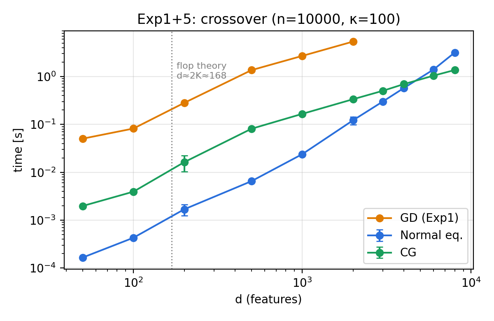
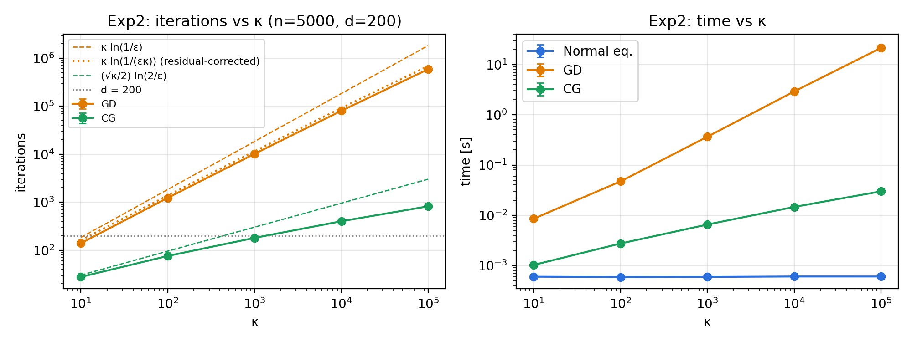
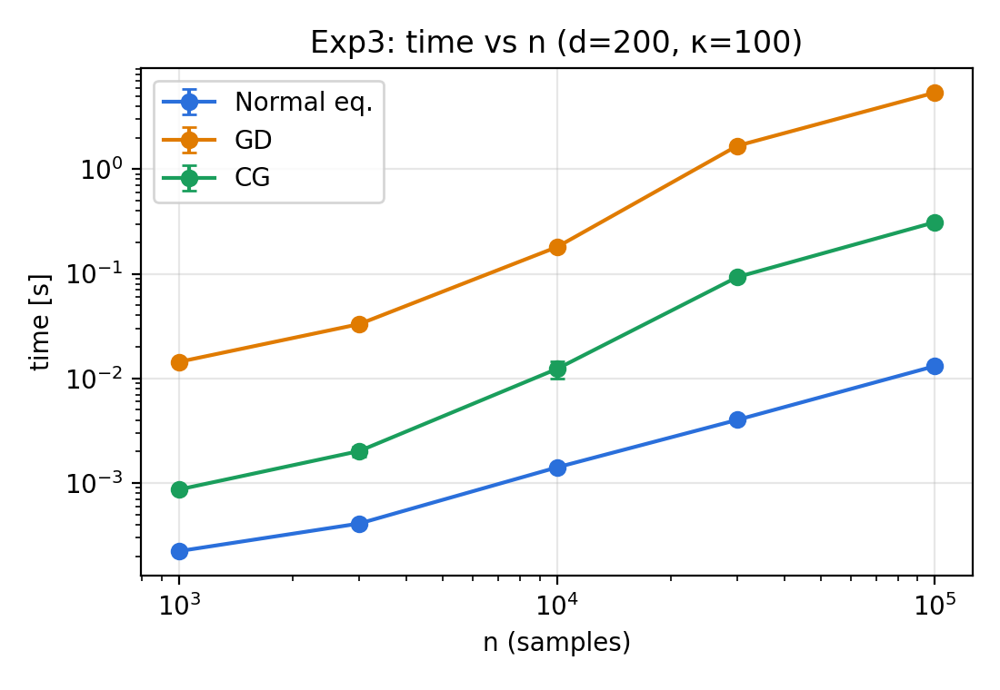
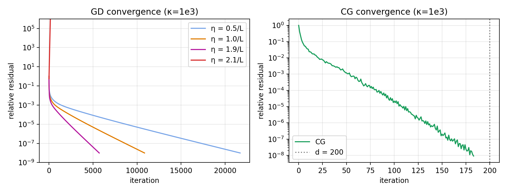
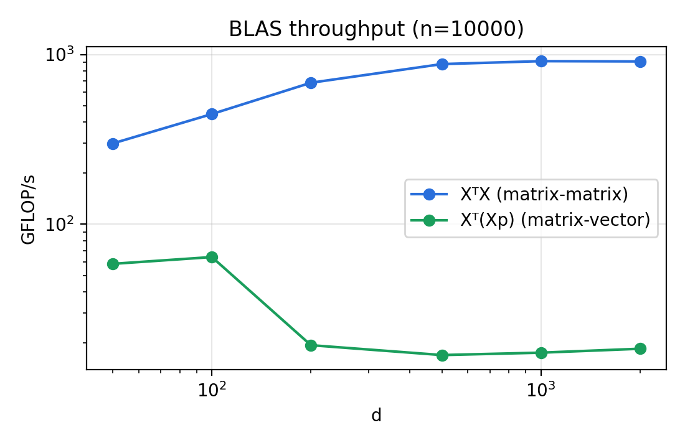

| GitHub | https://github.com/silvpear654/algorithms-project |
| 학번 | 2026193021 |
| 이름 | 김은배 |
| 환경 | Python 3.14.4 · NumPy 2.4.5 (BLAS: Apple Accelerate) · macOS 26.7 · Apple M5 (10코어, 32 GB) |
선형회귀는 머신러닝의 가장 기본 문제이고 손실이 2차식이라 이론 분석이 깔끔하다. 같은 문제를 한 번에 정확히 푸는 직접법(정규방정식)과 조금씩 다가가는 반복법(GD, CG)으로 풀 수 있어서, "언제 무엇을 써야 하는가"를 이론과 실측으로 함께 따져 볼 수 있다.
설정: $X\in\mathbb{R}^{n\times d}$, $y\in\mathbb{R}^n$, $\theta\in\mathbb{R}^d$.
$$f(\theta)=\frac{1}{2n}\lVert X\theta-y\rVert^2$$ $$\nabla f(\theta)=\frac{1}{n}X^\top(X\theta-y)$$ $$H=\frac{1}{n}X^\top X$$최적해 $\theta^*$는 $\nabla f(\theta^*)=0$, 즉 $X^\top X\theta^*=X^\top y$를 만족한다. 이를 대입하면
$$\nabla f(\theta)=\frac{1}{n}\left(X^\top X\theta - X^\top X\theta^*\right)$$ $$\nabla f(\theta)=H(\theta-\theta^*)$$조건수 $\kappa=\lambda_{\max}(X^\top X)/\lambda_{\min}(X^\top X)$는 손실 등고선이 얼마나 길쭉한지를 나타내며, 반복법의 속도를 결정한다.
처음에는 세 번째 방법으로 뉴턴법을 생각했지만, 손실이 2차식이면 뉴턴 한 걸음 $\theta_1=\theta_0-H^{-1}\nabla f(\theta_0)=\theta_0-(\theta_0-\theta^*)=\theta^*$로 바로 정규방정식의 해가 되어 사실상 같은 방법이므로 CG로 바꿨다.
역행렬은 만들지 않고 np.linalg.solve(LU 분해)로 푼다.
| 단계 | 연산량 (flop) | 추가 메모리 |
|---|---|---|
| $A=X^\top X$ | $\approx 2nd^2$ (곱셈·덧셈) | $d^2$ |
| $b=X^\top y$ | $\approx 2nd$ | $d$ |
| LU 분해·풀기 | $\approx \tfrac{2}{3}d^3$ | $d^2$ |
| 합계 | $O(nd^2+d^3)$, $\kappa$와 무관 | $O(d^2)$ |
오차 $e_k=\theta_k-\theta^*$에 대해 $\nabla f(\theta_k)=He_k$이므로
$$e_{k+1}=e_k-\eta He_k$$ $$e_{k+1}=(I-\eta H)\,e_k$$고유방향별로 $|1-\eta\lambda_i|$배씩 줄어든다. 따라서
구현에서는 $L$을 거듭제곱법 100회로 추정한다 ($d^3$짜리 고윳값 분해를 피하기 위함). 이 시간도 GD 시간에 포함했다.
$A=X^\top X$, $b=X^\top y$, $r=b-A\theta$, $p_0=r_0$로 두고
$$\alpha_k=\frac{r_k^\top r_k}{p_k^\top Ap_k}$$ $$\theta_{k+1}=\theta_k+\alpha_kp_k$$ $$r_{k+1}=r_k-\alpha_kAp_k$$ $$\beta_k=\frac{r_{k+1}^\top r_{k+1}}{r_k^\top r_k}$$ $$p_{k+1}=r_{k+1}+\beta_kp_k$$$\alpha_k$는 $\varphi(\alpha)=g(\theta_k+\alpha p_k)$ ($g(\theta)=\tfrac12\theta^\top A\theta-b^\top\theta$)를 미분해 0으로 두어 얻고, $\beta_k$는 $p_{k+1}^\top Ap_k=0$ (A-켤레) 조건과 잔차 직교성 $r_{k+1}^\top r_k=0$으로 얻는다. 방향들이 서로 A-켤레라서 한 번 줄인 방향의 오차를 다시 망가뜨리지 않는다.
| 상황 | 예측 |
|---|---|
| $d$ 작음 | 정규방정식이 가장 빠름 |
| $d$ 큼 | $d^3$, $nd^2$ 항 때문에 반복법이 역전. 교차점 ($n\gg d$): $2nd^2\approx 4ndK$ ⇒ $d\approx 2K$. $\kappa=100$에서 CG $K\approx 84$ (실측) → $d\approx 170$ |
| $\kappa$ 큼 | GD 반복 수 $\propto\kappa$, CG $\propto\sqrt\kappa$, 정규방정식 불변 |
| 메모리 | 정규방정식만 $d^2$로 증가, 반복법은 $O(d)$ |
| $n$ | 세 방법 모두 시간이 $n$에 선형 |
$X=U\,\mathrm{diag}(s)\,V^\top$ ($U$: $n\times d$ 정규직교 열, $V$: $d\times d$ 직교행렬, 둘 다 가우스 행렬의 QR로 생성).
특이값 $s_i=\sqrt{\lambda_i}$, $\lambda_i$는 $1\sim\kappa$ 로그 간격. 그러면 $X^\top X=V\,\mathrm{diag}(s^2)V^\top$이므로
$\kappa(X^\top X)$가 정확히 원하는 값이 된다 (검증: python src/data.py → 1000.0000).
$y=X\theta_{\text{true}}+0.01\cdot\mathcal N(0,1)$.
| 기준 | 도구 | 비고 |
|---|---|---|
| 실행 시간 | time.perf_counter | 데이터 생성 제외. tracemalloc을 끈 상태로 따로 측정 |
| 반복 수 | 함수 반환값 $k$ | 정규방정식은 1 |
| 추가 메모리 | tracemalloc 최대값 | 시드 0에서 한 번. 반복법은 최대 메모리가 반복 수와 무관하므로 50회로 잘라 측정. LAPACK 내부 작업 공간은 잡히지 않음 (5.5절) |
| 정확도 | 상대 잔차 $\lVert X^\top y-X^\top X\theta\rVert/\lVert X^\top y\rVert$ | 셋 모두 $\le10^{-8}$일 때만 공정한 비교로 봄 (모든 조건에서 만족, 4장 참고) |
공정성: 같은 언어(Python)·같은 기기에서 순차 실행, 시드마다 데이터를 한 번 만들어 세 방법에 똑같이 넣음, GD와 CG는 같은 시작점 $\theta_0=0$과 같은 정지 기준. 조건마다 시드 0~4 (확장 실험 5는 0~2)의 평균 ± 표준편차.
| 실험 | 고정 | 변화 | 확인할 것 |
|---|---|---|---|
| 1. 차원 | $n=10^4,\ \kappa=100$ | $d=50\sim2000$ (6단계) | 시간 교차점, 메모리 $d^2$ 대 $d$ |
| 2. 조건수 | $n=5000,\ d=200$ | $\kappa=10^1\sim10^5$ | 반복 수 로그-로그 기울기 |
| 3. 데이터 수 | $d=200,\ \kappa=100$ | $n=10^3\sim10^5$ | 시간이 $n$에 선형인지 |
| 4. 학습률 | $n=5000,\ d=200,\ \kappa=10^3$ | $\eta=0.5,1,1.9,2.1\,/L$ | GD 발산 경계 $2/L$ |
| 5. 확장 | $n=10^4,\ \kappa=100$ | $d=2000\sim8000$ | 실험 1 범위에서 교차가 안 나와 추가 (GD 제외) |
반복 상한: CG $10d$, GD $10^6$ (실험 2는 $3\times10^6$). 모든 조건에서 상한에 걸리지 않고 정지 기준으로 멈췄다.
모든 조건에서 정규방정식의 상대 잔차는 $2\times10^{-15}\sim6\times10^{-15}$, GD·CG는 $\le 1.0\times10^{-8}$이었다
(실험 4의 $\eta=2.1/L$ 제외). 즉 아래 시간 비교는 모두 같은 품질 기준을 통과한 결과끼리의 비교다.
전체 수치는 results/summary.md와 results/exp*.csv에 있다.
| $d$ | 정규방정식 [ms] | GD [ms] (반복) | CG [ms] (반복) | NE/CG 시간비 | tracemalloc NE / CG |
|---|---|---|---|---|---|
| 50 | 0.17 | 50 (1273) | 2.0 (52) | 0.09 | 22 KB / 84 KB |
| 200 | 1.7 | 282 (1262) | 16 (76) | 0.10 | 324 KB / 91 KB |
| 500 | 6.5 | 1357 (1245) | 81 (82) | 0.08 | 2.0 MB / 105 KB |
| 1000 | 24 | 2691 (1245) | 166 (83) | 0.14 | 8.0 MB / 129 KB |
| 2000 | 122 | 5359 (1252) | 335 (84) | 0.36 | 32 MB / 177 KB |
| 3000* | 300 | – | 502 (84) | 0.60 | 72 MB / 0.23 MB |
| 4000* | 575 | – | 693 (84) | 0.83 | 128 MB / 0.27 MB |
| 6000* | 1400 | – | 1042 (84) | 1.34 | 288 MB / 0.37 MB |
| 8000* | 3161 | – | 1364 (84) | 2.32 | 512 MB / 0.47 MB |
* 실험 5 (시드 3개). 표준편차는 대부분 평균의 5% 이내이며, 실험 1의 $d=200$만 GD ±35%, CG ±37%로 컸다 (summary.md 참고).

| $\kappa$ | NE [ms] | GD 반복 | 이론 $\kappa\ln\frac1\varepsilon$ | 보정 $\kappa\ln\frac{1}{\varepsilon\kappa}$ | GD [s] | CG 반복 | 이론 $\frac{\sqrt\kappa}{2}\ln\frac2\varepsilon$ | CG [ms] |
|---|---|---|---|---|---|---|---|---|
| $10^1$ | 0.60 | 140 ± 4 | 184 | 161 | 0.009 | 28 | 30 | 1.0 |
| $10^2$ | 0.59 | 1233 ± 57 | 1842 | 1382 | 0.047 | 76 | 96 | 2.8 |
| $10^3$ | 0.60 | 10193 ± 627 | 18421 | 11513 | 0.37 | 181 | 302 | 6.6 |
| $10^4$ | 0.61 | 80356 ± 6376 | 184207 | 92103 | 2.9 | 401 | 956 | 14.7 |
| $10^5$ | 0.61 | 591880 ± 61354 | 1842068 | 690776 | 21.4 | 822 | 3022 | 29.9 |

| $n$ | NE [ms] | GD [ms] | CG [ms] | 반복 1번 [µs] GD / CG | $X$ 크기 |
|---|---|---|---|---|---|
| 1,000 | 0.22 | 14 | 0.87 | 11 / 11 | 1.6 MB |
| 3,000 | 0.41 | 33 | 2.0 | 26 / 26 | 4.8 MB |
| 10,000 | 1.41 | 180 | 12.3 | 143 / 162 | 16 MB |
| 30,000 | 4.01 | 1671 | 92.9 | 1314 / 1223 | 48 MB |
| 100,000 | 13.1 | 5388 | 311 | 4357 / 4080 | 160 MB |

| $\eta$ | 반복 수 | 시간 [ms] | 최종 상대 잔차 | 이론 $\max_i|1-\eta\lambda_i|$ |
|---|---|---|---|---|
| $0.5/L$ | 20391 ± 1254 | 728 | $1.0\times10^{-8}$ | 0.9995 |
| $1.0/L$ | 10193 ± 627 | 365 | $1.0\times10^{-8}$ | 0.9990 |
| $1.9/L$ | 5363 ± 330 | 194 | $1.0\times10^{-8}$ | 0.9981 |
| $2.1/L$ | 308 ± 8 (발산 감지) | 15 | $1.1\times10^{12}$ | 1.1 |

연산량 이론은 "flop 하나의 비용이 어디서나 같다"고 가정한다. 그러나 정규방정식의 핵심인 $X^\top X$는 행렬-행렬 곱(GEMM)이고,
반복법의 $X^\top(Xp)$는 행렬-벡터 곱(GEMV)이다. 두 연산을 같은 기기에서 직접 재 보았다 (src/analyze.py).
| $d$ ($n=10^4$) | GEMM GFLOP/s | GEMV GFLOP/s | 비율 |
|---|---|---|---|
| 50 | 471 | 56 | 8× |
| 200 | 703 | 45 | 16× |
| 500 | 951 | 20 | 47× |
| 1000 | 1039 | 20 | 52× |
| 2000 | 973 | 21 | 47× |

GEMM은 $X$의 한 원소를 캐시에 올려 $d$번 재사용하므로 연산 장치를 거의 다 쓰고(약 1 TFLOP/s), GEMV는 원소 하나를 읽고 곱셈 1번만 하므로 메모리 대역폭에 묶인다. 같은 flop이 약 50배 비싸다.
GEMM이 1 TFLOP/s나 나오는 이유 (확인): BLAS 스레드를 1개로 제한해도(VECLIB_MAXIMUM_THREADS=1) $X^\top X$ ($n=10^4, d=1000$)가
802 GFLOP/s였다 (4개 968, 10개 1033). 일반 벡터 연산(NEON)으로는 코어 하나가 FP64 기준 사이클당 최대 16 flop
(128비트 FMA 파이프 4개 × double 2개 × 2 flop)이라, 클럭을 5 GHz로 넉넉히 잡아도 80 GFLOP/s를 넘을 수 없다.
10배 이상 차이 나므로 Accelerate는 GEMM에 칩의 행렬 전용 유닛(ARM SME)을 쓰고 있다. 이 칩이 SME와 FP64 행렬 연산을 지원한다는 것도
sysctl hw.optional.arm.FEAT_SME_F64F64 = 1로 확인했다 (src/verify_claims.py). 반면 GEMV는 행렬 유닛을 써도 메모리 읽기가 병목이라 이득이 없다.
이 처리량 $G$를 넣어 모델을 보정하면
$$T_{\text{NE}}\approx\frac{2nd^2}{G_{\text{GEMM}}}+\frac{\tfrac23d^3}{G_{\text{LU}}}$$ $$T_{\text{CG}}\approx K\cdot\frac{4nd}{G_{\text{GEMV}}}$$$d^3$ 항을 무시하고 두 식을 같게 놓으면
$$\frac{2nd^2}{G_{\text{GEMM}}}=\frac{4ndK}{G_{\text{GEMV}}}$$ $$d=2K\cdot\frac{G_{\text{GEMM}}}{G_{\text{GEMV}}}$$ $$d\approx2\times84\times50\approx8400$$LU 항($\tfrac23d^3$)은 정규방정식 쪽 시간을 늘려 교차점을 앞당기므로 실제 교차점은 이보다 앞에 온다 — 실측 4700과 같은 자릿수다. 보정 모델로 $d=6000$을 검산하면 CG는 $84\times4\times10^4\times6000/(20\times10^9)\approx1.0$ s (실측 1.04 s)로 거의 정확했다. 결론: 점근 복잡도는 "어느 쪽이 결국 이기나"를 알려 주지만, "어디서 이기나"는 연산 종류별 하드웨어 효율이 정한다. 중간 제출 때 "BLAS 때문에 교차점이 뒤로 밀릴 것"이라고 예상했는데, 방향은 맞았고 크기(약 28배)는 예상보다 훨씬 컸다.
반복 1번은 $X$ 전체를 두 번 읽는다. 실험 3에서 반복 1번 시간을 읽은 바이트 수로 나누면
16 MB까지는 칩 안의 캐시에서 읽고, 그 위로는 메인 메모리 대역폭(약 73 GB/s로 일정)에 묶인다.
캐시 크기 확인: sysctl hw.perflevel0.l2cachesize = 16,777,216 바이트, 즉 성능 코어 4개가 공유하는 L2 캐시가 정확히 16 MiB다
(효율 코어 6개의 L2는 6 MiB). $n=10^4, d=200$의 $X$는 $8\times10^4\times200=16{,}000{,}000$ 바이트로 L2에 딱 들어가고, $n=3\times10^4$의 48 MB는 들어가지 않는다.
절벽이 생긴 위치가 L2 크기와 정확히 맞는다.
그래서 문제 크기가 이 경계를 지나는 구간에서만 기울기가 1보다 커지고, 경계를 지나면 다시 선형이 된다.
실험 1에서 $d$ 기울기가 1.3이었던 것도 같은 이유다 ($d=200$에서 16 MB, $d=500$에서 40 MB).
정규방정식(GEMM)은 블록 단위로 캐시를 재사용하므로 이 절벽을 거의 겪지 않는다 ($n$ 기울기 0.97).
이론 $K\approx\kappa\ln(1/\varepsilon)$는 오차 $e$를 $\varepsilon$배로 줄이는 반복 수다. 그런데 실험의 정지 기준은 잔차 $r=b-A\theta=-Ae$로 쟀다. 고유방향 $i$의 성분으로 쓰면
$$r_i^{(k)}=\lambda_i(1-\eta\lambda_i)^k\,e_i^{(0)}$$가장 느린 방향($\lambda_{\min}=1$)의 잔차는 $\lambda_{\min}$이 곱해져 처음부터 작고, 분모 $\lVert b\rVert$는 큰 고윳값($\approx\kappa$) 성분이 지배한다. 즉 상대 잔차 기준 $\varepsilon$는 오차 기준으로 대략 $\varepsilon\kappa$와 같다. $\eta=1/L$이면 느린 방향의 비율이 $1-1/\kappa$이므로
$$\left(1-\tfrac1\kappa\right)^K\approx\varepsilon\kappa$$ $$K\approx\kappa\ln\frac{1}{\varepsilon\kappa}$$이 보정식은 실측의 86~89%로 다섯 $\kappa$ 모두에서 일관되게 맞았다. 로그-로그 기울기도 설명된다:
$$\frac{d\ln K}{d\ln\kappa}=1-\frac{1}{\ln\frac{1}{\varepsilon\kappa}}$$$\kappa=10^3$ 근처에서 $1-1/11.5\approx0.91$로, 실측 기울기 0.907과 일치한다.
남은 6~11% 차이 확인: $X^\top X$를 고윳값 분해해 $\lVert r_k\rVert=\lVert\sum_i c_i(1-\eta\lambda_i)^k q_i\rVert$ ($c_i$: $b$의 고유 성분)를 직접 계산하면, 처음으로 $\le\varepsilon\lVert b\rVert$가 되는 $k$가 실측 반복 수와 정확히 같다 (시드 0, $\kappa=10^1\sim10^4$에서 145, 1295, 10850, 87038 모두 일치). 즉 차이는 반올림 오차가 아니라 보정식의 근사에서 온다. 보정식은 "느린 성분이 $\lVert b\rVert/\kappa$ 하나"라고 가정했는데, 실제로는 서로 반대 방향인 두 효과가 있다.
| $\kappa$ | 정확 계산 (= 실측) | 가장 느린 성분 1개만 | 느린 성분 10개 | 보정식 | $\lVert b\rVert/(\kappa\,|c_{\min}|)$ |
|---|---|---|---|---|---|
| $10^1$ | 145 | 130 | 145 | 161 | 12.9 |
| $10^2$ | 1295 | 1159 | 1295 | 1382 | 8.8 |
| $10^3$ | 10850 | 9576 | 10850 | 11513 | 6.9 |
| $10^4$ | 87038 | 74530 | 87036 | 92103 | 5.8 |
두 효과를 합친 결과가 보정식보다 6~11% 적은 실측값이다 (src/verify_claims.py gd).
tracemalloc은 NumPy가 배열을 만들 때 보고하는 할당만 잡는다. 정규방정식의 측정값은 $8d^2$와 정확히 일치했는데, 이것은 $A=X^\top X$ 한 개뿐이다.
확인: $d=4000$에서 이미 만들어 둔 $A$로 np.linalg.solve만 실행하면 tracemalloc 최대값은 0.03 MB였지만,
프로세스의 실제 최대 메모리(RSS)는 128 MB = 정확히 $8d^2$ 늘었다. LAPACK이 LU 분해를 위해 $A$를 통째로 복사하는 작업 공간이
NumPy 바깥(malloc)에서 할당되어 tracemalloc에 보이지 않는 것이다. 따라서 정규방정식의 실제 추가 메모리는 $A$와 그 LU 복사본을 합친 약 $16d^2$ 바이트
(예: $d=8000$에서 약 1 GB)이고, 표의 tracemalloc 값은 그 절반만 보여 준다. 차수 $O(d^2)$라는 결론은 그대로다.
반복법은 NumPy 연산만 쓰므로 측정값이 실제와 같다. 다만 이론 $O(d)$가 아니라 $O(n+d)$였다 — 처음 계획에서 $Xp$ 임시 벡터(길이 $n$)를 빠뜨렸던 것이다.
참고로 실험 5 전체 실행의 최대 메모리는 7.0 GB였다 (/usr/bin/time -l). 대부분 데이터 생성($n\times d$ QR, $d=8000$에서 행렬 하나가 640 MB)과 정규방정식의 $16d^2$에서 나온다.
CG의 반복 1번 비용은 $X$의 0이 아닌 원소 수(nnz)에 비례하지만, 정규방정식은 $X^\top X$가 거의 밀집이 되면 여전히 $O(d^3)$ LU가 필요하다.
그래서 $X$가 희소하면 CG가 더 일찍 이길 것이라고 예상했고, 이를 직접 확인했다 (src/sparse_check.py, SciPy 1.18.1 희소 행렬, 같은 NumPy 2.4.5, 시드 0, 3번 중 최소 시간).
$n=20000$, 원소의 0.5%만 0이 아닌 무작위 $X$를 만들고, 본 실험의 $\kappa=100$과 비슷하게 하려고 열 크기를 1~10배로 벌렸다.
| $d$ | nnz | $\kappa(X^\top X)$ | 정규방정식 [ms] | CG 희소 [ms] (반복) | CG 밀집 $X$ [ms] | NE/CG 시간비 |
|---|---|---|---|---|---|---|
| 500 | 50,000 | 153 | 2.6 | 6.3 (102) | 200 | 0.41 |
| 1000 | 100,000 | 242 | 8.5 | 14.7 (121) | 472 | 0.58 |
| 2000 | 200,000 | 233 | 41.1 | 27.5 (127) | 987 | 1.49 |
| 4000 | 400,000 | 349 | 275.2 | 58.3 (148) | 2299 | 4.72 |
모든 경우 상대 잔차는 정규방정식 $\le4.3\times10^{-15}$, CG $\le9.9\times10^{-9}$. 교차점은 $d=1000\sim2000$ 사이로, 밀집 행렬(4700)보다 2~5배 앞당겨졌다.
같은 행렬을 밀집 배열로 바꿔 CG를 돌리면 희소 CG보다 30~40배 느려, 이득이 희소 행렬-벡터곱에서 온다는 것도 확인된다.
열 스케일링 없이 만든 경우($\kappa=4\sim8$, CG 16~25번)에는 $d=500$부터 이미 CG가 빨랐다 (results/sparse_check.txt).
단, $\kappa$를 본 실험처럼 정확히 맞추지는 못했고 시드도 1개뿐이라 보조 확인으로만 쓴다.
| 정규방정식 | GD | CG | |
|---|---|---|---|
| 시간 (이 기기) | $d\lesssim4700$에서 가장 빠름 | 전 구간 가장 느림 | $d\gtrsim4700$에서 가장 빠름 |
| $\kappa$ 민감도 | 없음 | 반복 $\propto\kappa^{0.9}$ | 반복 $\propto\kappa^{0.4}$ |
| 추가 메모리 | 약 $16d^2$ ($A$ + LU 복사본, $d=8000$에서 약 1 GB) | $O(n+d)$ | $O(n+d)$ |
| 정확도 | 잔차 $10^{-15}$ | 정지 기준까지 ($10^{-8}$) | 정지 기준까지 ($10^{-8}$) |
| 조정할 값 | 없음 | 학습률 ($L$ 추정 필요, $2/L$ 넘으면 발산) | 없음 (반복 상한만) |
본인 판단:
VECLIB_MAXIMUM_THREADS)를 바꿔 같은 보정 모델이 맞는지 확인하고 싶다.lstsq가 필요해질 것이다. 상대 잔차 대신 $\lVert\theta-\theta_{\text{ref}}\rVert$를 기준으로 비교를 넓힐 수 있다.git clone https://github.com/silvpear654/algorithms-project.git cd algorithms-project # 또는 제출한 압축 파일을 푼 폴더 pip install -r requirements.txt # numpy, matplotlib python src/data.py # κ 확인 → kappa = 1000.0000 python src/methods.py # 세 방법 정확도 확인 (상대 잔차 ≤ 1e-8) python src/benchmark.py --exp all --quick # 작은 크기로 흐름 확인 (약 1초) python src/benchmark.py --exp all # 실험 1~4 (이 기기에서 4분 1초) python src/benchmark.py --exp 5 --seeds 0 1 2 # 확장 실험 5 (2분 44초, 최대 메모리 7.0 GB) python src/analyze.py # 그래프 results/figures/, 요약 results/summary.md python src/verify_claims.py # SME·LAPACK 메모리·GD 정확 계산·결정성 확인 pip install scipy && python src/sparse_check.py # 희소 행렬 보조 확인 (scipy 필요) bash report/build_pdf.sh # 이 보고서 PDF (Google Chrome 필요)
| 파일 | 내용 |
|---|---|
src/data.py | $\kappa$를 정확히 맞춘 데이터 생성 |
src/methods.py | 정규방정식, GD(거듭제곱법 $L$ 추정 + 발산 감지), CG, 상대 잔차 |
src/benchmark.py | 실험 1~5 실행 → results/exp*.csv (첫 줄에 Python·NumPy·기기 정보) |
src/analyze.py | 평균·표준편차, 로그-로그 기울기, 교차점 보간, 수렴 곡선, BLAS 처리량 측정 |
src/verify_claims.py | 5장의 보충 확인 (SME 처리량, LAPACK 작업 공간, GD 스펙트럼 계산, 결정성) → results/verify_claims.txt |
src/sparse_check.py | 희소 행렬 보조 확인 (scipy) → results/sparse_check.txt |
slides/ | 중간 제출 슬라이드와 등고선 그림 스크립트 |
실행 시간은 기기에 따라 다르지만, 반복 수·잔차·메모리는 시드가 같으면 같은 값이 나온다. 확인: 같은 입력으로 CG를 10번, GD를 3번 돌리면 반복 수와 $\theta$가 비트 단위까지 똑같았다. BLAS 스레드 수를 1개와 10개로 바꿔도 CG 반복 수는 407번으로 같았고, 이 값은 본 실험 CSV에 기록된 값(실험 2, $\kappa=10^4$, 시드 0)과도 일치했다. 다른 기기나 BLAS에서는 덧셈 순서가 달라 반복 수가 조금 달라질 수 있다.
| 도구 | 물어본 것 | 받은 것 / 내가 한 것 |
|---|---|---|
| Claude (claude.ai) | 주제 후보, 뉴턴법을 세 번째 방법으로 써도 되는지, GD·CG 수렴 이론 유도, 실험 설계 | 뉴턴법이 2차 손실에서 한 번에 끝난다는 지적 → CG로 교체. $\alpha,\beta$ 유도와 반복 수 공식 정리, 코드 뼈대. 유도는 직접 다시 따라가며 확인 |
| Claude Code | 중간 슬라이드 제작, 코드를 저장소 구조로 정리, 실험 실행, 결과 분석, 보고서 초안 | src/ 코드와 분석 스크립트, 실험 실행, 그래프, 보고서 초안. 측정 방식(시간·메모리 분리 측정), 정지 기준 보정식(5.3절)과 처리량 보정 모델(5.1절)은 AI와 대화하며 정리 |
남의 코드는 쓰지 않았다. CG는 표준 알고리즘(Hestenes–Stiefel)을 그대로 구현했고, $A$를 만들지 않도록 $Ap=X^\top(Xp)$로 바꾼 것만 다르다 (CGNR 형태).
numpy.linalg.solve, tracemalloc (Python 표준 라이브러리) 문서.